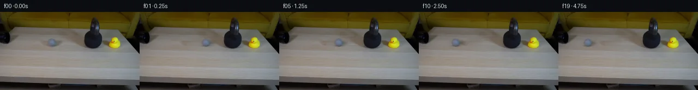

![首帧]()

Round 00
2026-11-05T20:32:22.838245+00:00像素候选变化代码 +231/−0inspection 更新
pixels 3821db3b511c632d · code 2fc73f2b5f394440
查看本轮 generate.py 真实 diff
--- previous/generate.py
+++ current/generate.py
@@ -0,0 +1,231 @@
+"""Source-conditioned pixel animation; no external models, assets, or engines."""
+from pathlib import Path
+import json
+import hashlib
+import numpy as np
+from PIL import Image, ImageDraw
+from scipy.ndimage import gaussian_filter, gaussian_filter1d, map_coordinates
+from scipy.optimize import least_squares
+from artifact_io import save
+
+ROOT = Path(__file__).resolve().parent
+W, H, COUNT, FPS = 256, 144, 20, 4
+SOURCE = np.asarray(Image.open(ROOT / 'first_frame.png').convert('RGB'))
+Y, X = np.mgrid[:H, :W].astype(float)
+CX, CY, RX, RY = 95.4, 56.0, 7.45, 7.25
+
+
+def smoothstep(a):
+ a = np.clip(a, 0, 1)
+ return a * a * (3 - 2 * a)
+
+
+def reconstruct_table():
+ """Restore just the original ball footprint using neighboring wood rows."""
+ source = SOURCE.astype(float)
+ estimate = source.copy()
+ sample_x = np.r_[np.arange(76, 86), np.arange(118, 128)]
+ for row in range(45, 69):
+ for channel in range(3):
+ line = np.polyfit(sample_x, source[row, sample_x, channel], 1)
+ target_x = np.arange(80, 118)
+ donor = source[row, target_x - 35, channel]
+ grain = donor - gaussian_filter1d(donor, 2.0)
+ estimate[row, target_x, channel] = np.polyval(line, target_x) + 0.65 * grain
+ # A small feathered footprint encompasses both ball and its cast shadow.
+ horizontal = smoothstep((X - 82) / 5) * smoothstep((117 - X) / 5)
+ vertical = smoothstep((Y - 46) / 3) * smoothstep((67 - Y) / 3)
+ footprint = horizontal * vertical
+ clean = source * (1 - footprint[..., None]) + estimate * footprint[..., None]
+ return clean, estimate, footprint
+
+
+def extract_ball(estimated_table):
+ # Subpixel circular coverage, blurred to the source photograph's focus.
+ radius = np.sqrt(((X - CX) / RX) ** 2 + ((Y - CY) / RY) ** 2)
+ coverage = smoothstep((1.035 - radius) / 0.105)
+ matte = gaussian_filter(coverage, 0.48)
+ # Remove table contamination from antialiased edge colors.
+ a = np.maximum(matte[..., None], 0.16)
+ foreground = (SOURCE.astype(float) - (1 - matte[..., None]) * estimated_table) / a
+ foreground = np.clip(foreground, [64, 70, 78], [147, 156, 175])
+ foreground[matte < 0.06] = [101, 111, 131]
+ # Store premultiplied RGB, retaining the actual photographed interior.
+ return matte, foreground
+
+
+def fit_shadow(estimated_table, ball_matte):
+ observed = np.clip(1 - SOURCE.astype(float).mean(axis=2) /
+ np.maximum(estimated_table.mean(axis=2), 1), 0, 0.6)
+ region = (X >= 84) & (X <= 114) & (Y >= 49) & (Y <= 66) & (ball_matte < 0.045)
+ xx, yy, target = X[region], Y[region], observed[region]
+
+ def evaluate(p, xx, yy):
+ amp, dx, dy, sx, sy, contact_amp, cdx, cdy, csx, csy = p
+ cast = amp * np.exp(-0.5 * (((xx - CX - dx) / sx) ** 2 +
+ ((yy - CY - dy) / sy) ** 2))
+ contact = contact_amp * np.exp(-0.5 * (((xx - CX - cdx) / csx) ** 2 +
+ ((yy - CY - cdy) / csy) ** 2))
+ return 1 - (1 - cast) * (1 - contact)
+
+ initial = [.28, 6, 3, 6, 2.5, .22, 1, 6.8, 4.5, .8]
+ lower = [.08, 3, 1, 3, 1.2, .02, -1, 6, 2.5, .4]
+ upper = [.45, 10, 5, 9, 4, .35, 4, 8, 6, 1.5]
+ result = least_squares(lambda p: evaluate(p, xx, yy) - target,
+ initial, bounds=(lower, upper), loss='soft_l1', f_scale=.025)
+ return result.x, float(np.sqrt(np.mean(result.fun ** 2)))
+
+
+def trajectory(t):
+ if t < 0.5:
+ return CX + 104 * t, 104.0
+ elapsed = min(t - 0.5, 58 / 18)
+ return 147.4 - 58 * elapsed + 9 * elapsed ** 2, -58 + 18 * elapsed
+
+
+def sphere_grain(nx, ny, nz, angle):
+ # A weak continuous surface texture rotates about a tilted rolling axis.
… diff truncated; 144 more lines …